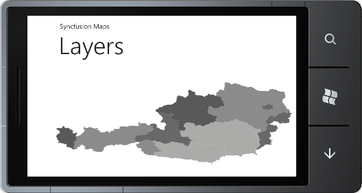
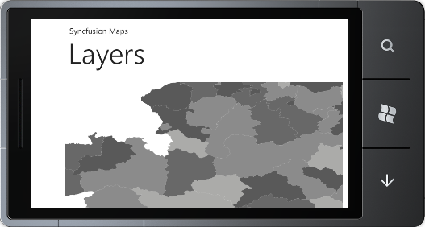

Maps control’s content can be set using the LayeredContent property of the Map Control. Layered content can be any one of the items of Layers. This denotes the current visible layer of the map. Layered content can be the ShapeFileLayer. The user can display different shapefiles depending on the zoom factor by setting the TranslateZoomFactor property on the ShapeFileLayer. When ZoomFactor value reaches the TranslateZoomFactor value, the content of the Map will be changed, to display the corresponding ShapeFileLayer.
The following code demonstrates how to change the Layers:
|
[XAML] <maps:MapControl x:Name="Map" LayeredContent="{Binding ElementName=shapeControl}" > <maps:MapControl.Layers> <maps:Layers> <maps:ShapeFileLayer Uri="WindowsPhoneApplication1.ShapeFiles.wv.shp" TranslateZoomFactor="1" x:Name="shapeControl" EnableColorPalette="True"> </maps:ShapeFileLayer> <maps:ShapeFileLayer TranslateZoomFactor="2" Uri="WindowsPhoneApplication1.ShapeFiles.ma.shp" x:Name="shapeControl1" EnableColorPalette="True"> </maps:ShapeFileLayer> </maps:Layers> </maps:MapControl.Layers> </maps:MapControl> |
|
[C#] MapControl map = new MapControl(); ShapeFileLayer shapeLayer = new ShapeFileLayer(); shapeLayer.Uri = "WindowsPhoneApplication1.ShapeFiles.wv.shp"; shapeLayer.TranslateZoomFactor = 1d; map.Layers.Items.Add(shapeLayer); ShapeFileLayer shapeLayer1 = new ShapeFileLayer(); shapeLayer.Uri = "WindowsPhoneApplication1.ShapeFiles.la.shp"; shapeLayer1.TranslateZoomFactor = 2d; map.Layers.Items.Add(shapeLayer1); map.LayeredContent = shapeLayer; LayoutRoot.Children.Add(map); |

Figure 14: MapControl Before Layer Changed

Figure 15: MapControl After LayerChanged